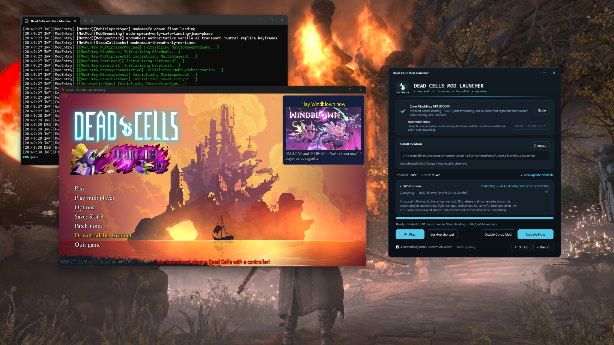

Install once. Then just press Play.
The launcher is built to remove the manual setup normally required for multiplayer modding.
Automatic setup
Finds Dead Cells, installs DCCM and the multiplayer mod, and checks the required .NET 10 and Visual C++ runtimes.
Steam + standalone
Uses the Steam DCCM path when appropriate and keeps LAN/direct-connect support for standalone installs.
Smart updates
Detects version updates and completely new ZIP builds even when the version number was not changed.
Vanilla in one click
Disable co-op and launch normal Dead Cells without Core Modding, then re-enable multiplayer later.
Repair + diagnostics
Repairs DCCM and can create a ready-to-send diagnostics report when a game fails to launch.
Patch notes
See the newest multiplayer changes and update status directly inside the launcher.
Quick start
Open the Windows launcher.
The launcher attempts to detect it automatically.
DCCM and the multiplayer mod are prepared automatically.
The launcher chooses the correct Steam or standalone launch route.
Co-op when you want it. Vanilla when you don't.
Restores the multiplayer mod and the DCCM launch path, including Steam setup when applicable.
Parks the multiplayer files and launches the real vanilla game without intentionally starting DCCM.
Build-aware updating
A release does not have to change from 0.4.1 to 0.4.2 for players to receive a fix. If the 0.4.1 package itself is replaced with a new build, the launcher can detect that package change and offer the update.
In action
